Chapter 27 Mediation Analysis: Natural Direct and Indirect Effects
With an intermediate variable  between the treatment
between the treatment  and outcome
and outcome  , the causal effects within principal strata defined by
, the causal effects within principal strata defined by  can assess the treatment effect heterogeneity across latent groups
can assess the treatment effect heterogeneity across latent groups  . When is indeed on the causal pathway from to , causal effects within some principal strata,
. When is indeed on the causal pathway from to , causal effects within some principal strata,  and
and  , can give information about the direct effect of on . However, these direct effects are only for two latent groups. The causal effects within the other two principal strata,
, can give information about the direct effect of on . However, these direct effects are only for two latent groups. The causal effects within the other two principal strata,  and
and  , contain both direct and indirect effects. Fundamentally, principal stratification does not provide any information about the indirect effect of on through because it does not even assume that can be intervened.
, contain both direct and indirect effects. Fundamentally, principal stratification does not provide any information about the indirect effect of on through because it does not even assume that can be intervened.
In the above discussion, I use the notions of “direct effect” and “indirect effect” in a casual way. When lies on the pathway from to , researchers often want to assess the extent to which the effect of on is through and the extent to which the effect is through other pathways. This is called mediation analysis. It is the topic of this chapter.
139 Motivating Examples
In mediation analysis, we have a treatment , an outcome , a mediator , and some background covariates  . Figure 43 illustrates their relationship. Below we give some concrete examples.
. Figure 43 illustrates their relationship. Below we give some concrete examples.
Example 27.1
VanderWeele et al., (2012) conducted mediation analysis to assess the extent to which the effect of variants on chromosome 15q25.1 on lung cancer is mediated through smoking and the extent to which it operates through other causal pathways53. The exposure levels correspond to changes from 0 to 2 C alleles, smoking intensity is measured by the square root of cigarettes per day, and the outcome is the lung cancer indicator. VanderWeele et al., (2012)’s study contained many sociodemographic covariates.
Example 27.2
Rudolph et al., (2018) studied the causal mechanism from neighborhood poverty to adolescent substance use, mediated by the school and peer environment. They used data from the National Comorbidity Survey Replication Adolescent Supplement, a nationally representative survey of U.S. adolescents conducted during 2001–2004. The treatment is the binary indicator of neighborhood disadvantage, defined as living in the lowest tertile of neighborhood socioeconomic status based on data from the 2000 U.S. Census. Four binary mediators are measures of school and peer environments, and six binary outcomes are measures of substance use. Baseline covariates included the adolescent’s sex, age, race, immigration generation, family income, etc.
Example 27.3
The mediation package in R contains a dataset called jobs, which is from JOBS II, a randomized field experiment that investigates the efficacy of a job training intervention on unemployed workers. We used this dataset in Chapter 107. The program is designed to not only increase reemployment among the unemployed but also enhance the mental health of the job seekers. It is therefore of interest to assess the indirect effect of the intervention on mental health through job search efficacy and its direct effect acting through other pathways. We will revisit this example in Chapter 142.2 later.
140 Nested Potential Outcomes
140.1 Natural Direct and Indirect Effects
Below we drop the index  for unit and assume all random variables are IID draws from a superpopulation. For simplicity, we focus on a binary treatment .
for unit and assume all random variables are IID draws from a superpopulation. For simplicity, we focus on a binary treatment .
We first consider the hypothetical intervention on  and define potential mediators and outcomes corresponding to the intervention on :
and define potential mediators and outcomes corresponding to the intervention on :
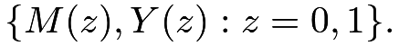 |
We then consider hypothetical intervention on both and  and define potential outcomes corresponding to the interventions on and :
and define potential outcomes corresponding to the interventions on and :
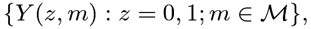 |
where
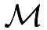
contains all possible values of.
Robins and Greenland, (1992) and Pearl, (2001) further consider the nested potential outcomes corresponding to intervention on and 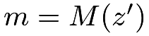
: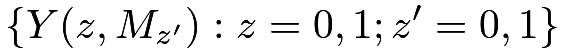 |
where I write
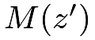
as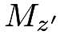
to avoid excessive parentheses. The notation is the hypothetical outcome if the treatment were set at level and the mediator were set at its potential level under treatment
is the hypothetical outcome if the treatment were set at level and the mediator were set at its potential level under treatment 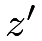
. Importantly, and can be different.
With a binary treatment, we have four nested potential outcomes in total:
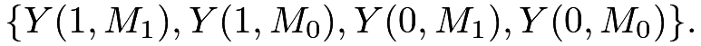 |
The nested potential outcome
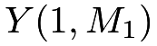
is the hypothetical outcome if the treatment were set at and the mediator were set at what would happen under . Similarly,
and the mediator were set at what would happen under . Similarly, 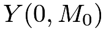
is the outcome if the treatment were set at and the mediator were set at what would happen under . It would be surprising if
and the mediator were set at what would happen under . It would be surprising if 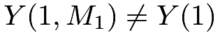
or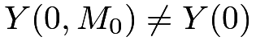
. Therefore, we make the following composition assumption throughout this chapter.Assumption 27.1 (composition)
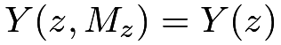
for .
.
The composition assumption cannot be proved. It is indeed an assumption. Without causing philosophical debates, we can even define  as , and define
as , and define  as . Then by definition, Assumption 27.1 holds.
as . Then by definition, Assumption 27.1 holds.
The nested potential outcome
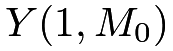
is the hypothetical outcome if the unit received treatment but its mediator were set at its natural value
but its mediator were set at its natural value 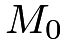
without the treatment. Similarly,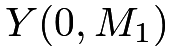
is the hypothetical outcome if the unit received control but its mediator were set at its natural value
but its mediator were set at its natural value 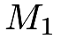
under the treatment. They are two cross-world counterfactual terms and are useful for defining the direct and indirect effects.Definition 27.1 (total, direct and indirect effects)
Define the total effect of the treatment on the outcome as
 |
Define the natural direct effect as
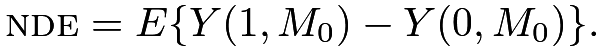 |
Define the natural indirect effect as
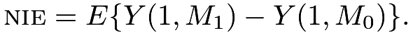 |
The total effect is the standard average causal effect of on . The natural direct effect measures the effect of the treatment on the outcome if the mediator were set at the natural value without the intervention. The natural indirect effect measures the effect of the treatment through changing the mediator if the treatment itself were set at . Under the composition assumption, the natural direct and indirect effects reduce to
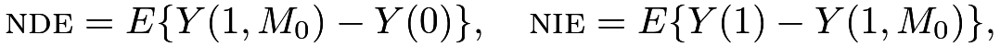 |
and therefore, we can decompose the total effect as the sum of the natural direct and indirect effects.
Mathematically, we can also define the natural indirect effect as
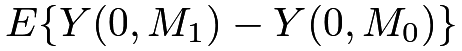
where the treatment is fixed at. However, this definition does not lead to the decomposition in Proposition 27.1.
Unfortunately, the nest potential outcome is not an easy quantity to understand due to the cross-world nature of the interventions: the treatment is set at but the mediator is set at its natural value under treatment . Clearly, these two interventions on the treatment cannot simultaneously happen in any realized experiment. To understand the cross-world potential outcome , we need to imagine the existence of parallel worlds as shown in Figure 44. Let’s focus on . When the treatment is set at , the mediator must take value . If at the same time, we want to set the mediator at
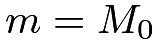
, we must know the value of for the same unit from another experiment in the parallel world. This can be an unrealistic physical experiment because it requires that the same unit is intervened at two different levels of the treatment. Under some strong assumptions about the homogeneity of units, we may use another unit’s mediator value under control as a proxy for .140.2 Metaphysics or Science
Causal inference is hard, and there is no agreement even on its mathematical notation. Robins and Greenland, (1992) and Pearl, (2001) used the nested potential outcomes to define the natural direct and indirect effects. However, Frangakis and Rubin, (2002) called and a priori counterfactuals because we can not observe them in any physical experiments. In this sense, they do not exist a priori. According to Popper, (1963), a way to distinguish science and metaphysics is the falsifiability of the statements. That is, if a statement is not falsifiable based on any physical experiments or observations, then it is not a scientific but rather a metaphysical statement. Because we can not observe and in any experiments, we can not falsify any statements involving them except for the trivial ones (e.g., some outcomes are binary, or continuous, or bounded). Therefore, a strict Popperian statistician would view mediation analysis as metaphysics.
More strikingly, Dawid, (2000) criticized the potential outcomes framework to be metaphysical, and he called Rubin’s “Science Table” defined in Chapter 7 a “metaphysical array.” This is a critique on not only the a priori counterfactuals and but also the simpler potential outcomes and . Dawid, (2000) argued that because we can never observe and jointly, then introducing the notation
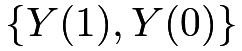
is a metaphysical activity. He is correct about the metaphysical nature of the joint distribution of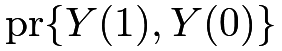
, but he is incorrect about the marginal distributions. Based on the observed data, we indeed can falsify some statements about the marginal distributions, although we cannot falsify any statements about the joint distribution.54 Therefore, even according to Popper, (1963), Rubin’s Science Table is not metaphysical because it has some nontrivial falsifiable implications although not all implications are falsifiable. This is the fundamental difference between and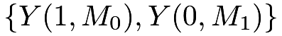
.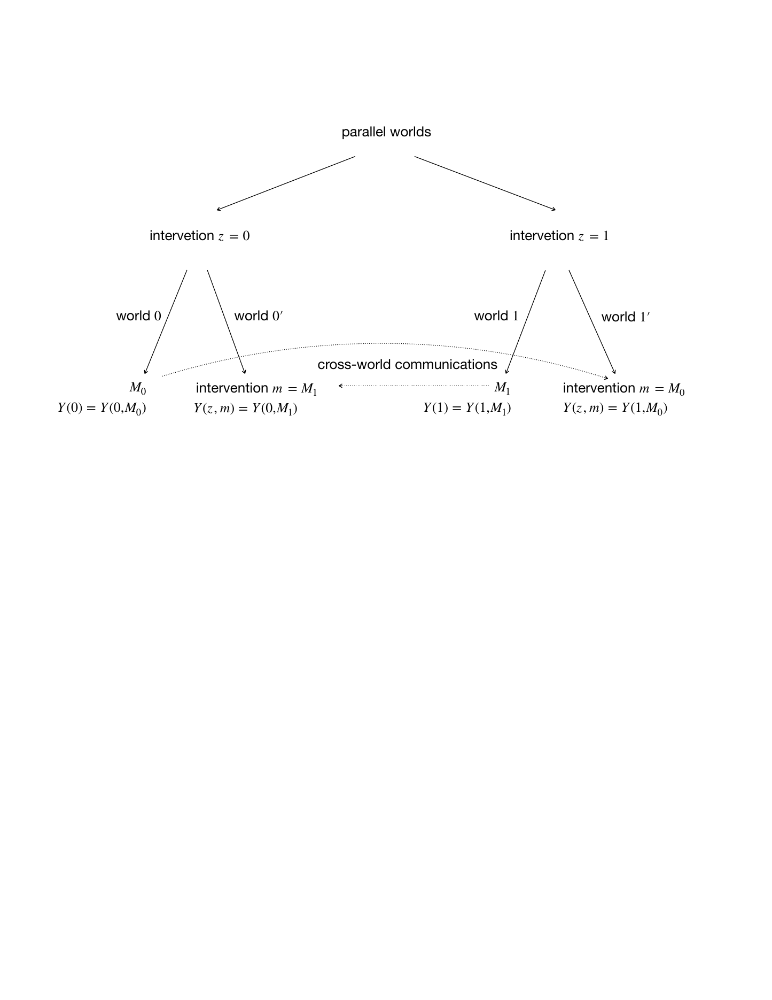
141 The Mediation Formula
Pearl, (2001)’s mediation formula relies on the following four assumptions. The first three essentially assume that the treatment and the mediator are both randomized conditional on observed covariates.
Assumption 27.2
There is no treatment-outcome confounding:
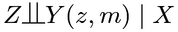 |
for all and .
Assumption 27.3
There is no mediator-outcome confounding:
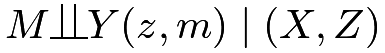 |
for all and .
Assumptions 27.2 and 27.3 together are often called sequential ignorability. They
are equivalent to the assumption that  are jointly randomized conditioning on :
are jointly randomized conditioning on :
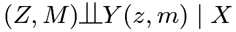 |
(138) |
Assumption 27.4
There is no treatment-mediator confounding:
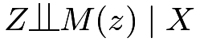 |
for all .
The last assumption is the cross-world independence.
Assumption 27.5
There is no cross-world independence between the potential outcomes and potential mediators:
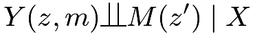 |
for all  and .
and .
Assumptions 27.2–27.4 are very strong, but at least they hold under experiments with randomized treatment and mediator. Assumption 27.5 is stronger because no physical experiment can ensure it. Because we can never observe  and in any experiment if
and in any experiment if
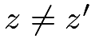
, Assumption 27.5 can never be validated so it is fundamentally metaphysical.Example 27.4
Given , we generate
 |
 |
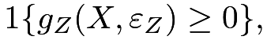 |
||
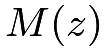 |
|
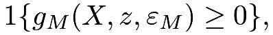 |
||
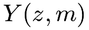 |
|
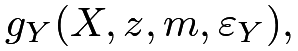 |
for 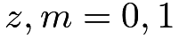 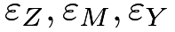 and from
 |
|
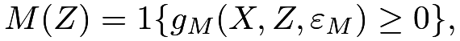 |
||
 |
|
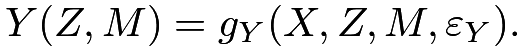 |
We can verify that Assumptions 27.2–27.5 hold under this data-generating process.
On the contrary, if we allow 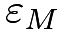 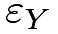 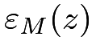 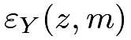
Pearl, (2001) proved the following key result for mediation analysis.
Theorem 27.1
Theorem 27.1 assumes that both and are discrete. With general and , the mediation formulas become
and
|
||||
|
From Theorem 27.1, the identification formulas for the means of the nested potential outcomes depend on the conditional mean of the outcome given the treatment, mediator, and covariates, as well as the conditional mean of the mediator given the treatment and covariates. We need to evaluate these two conditional means at different treatment levels if the nested potential outcome involves cross-world interventions.
If we drop the cross-world independence assumption, we can modify the definition of the natural direct and indirect effects and the same formulas hold. See Problem 27.11 for more details.
I give the proof below.
Proof of Theorem 27.1:
By the tower property, , so we need only to prove the formula for  .
Starting with the law of total probability, we have
.
Starting with the law of total probability, we have
|
||||
|
||||
|
||||
|

The above proof is trivial from a mathematical perspective. It illustrates the necessity of Assumptions 27.2–27.5.
Conditional on the mediation formulas for and simplify to
|
||||
|
 |
and
|
||||
|
 |
based on the law of total probability; the mediation formula for simplifies to
|
where the conditional expectation of the outcome is given  but the conditional distribution of the mediator is given
but the conditional distribution of the mediator is given  .
This leads to the identification formulas of the natural direct and indirect effects.
.
This leads to the identification formulas of the natural direct and indirect effects.
Corollary 27.1
As a special case, with a binary , the formula of the nie reduces to a product form below.
I leave the proof of Corollary 27.2 as Problem 27.6.
Corollary 27.2 gives a simple formula in the case of a binary .
With randomized conditional on , we can view as the conditional average causal effect of on . With randomized conditional on , we can view as the conditional average causal effect of on . The conditional natural indirect effect equals their product. This is coherent with our intuition that the indirect effect acts from to and then from to .
142 The Mediation Formula Under Linear Models
Theorem 27.1 gives the nonparametric identification formula for mediation analysis. It allows us to derive various formulas for mediation analysis under different models. I will introduce the famous Baron–Kenny method under linear models below. VanderWeele, (2015) gives explicit formulas for the natural direct and indirect effects for many commonly used models. I relegate the details of other models to Section 144.
142.1 The Baron–Kenny Method
The Baron–Kenny method assumes the following linear models for the mediator and outcome given the treatment and covariates.
Assumption 27.6 (linear models for the Baron–Kenny method)
Both the mediator and outcome follow linear models:
Under these linear models, the formulas for the natural direct and indirect effects simplify to functions of the coefficients.
The formulas in Corollary 27.3 are intuitive based on Figure 45. The direct effect equals the coefficient on the path , and the indirect effect equals the product of the coefficients on the path . I give the proof below based on Theorem 27.1.
Proof of Corollary 27.3: The conditional NDE equals
and the conditional NIE equals
|
||||
|
||||
|
which do not depend on  . Therefore, they are also the formulas for the unconditional natural direct and indirect effects.
. Therefore, they are also the formulas for the unconditional natural direct and indirect effects.
If we obtain OLS estimators of these coefficients, we can estimate the direct and indirect effects by
which is called the Baron–Kenny method (Judd and Kenny,, 1981; Baron and Kenny,, 1986) although it had several antecedents (Hyman,, 1955; Alwin and Hauser,, 1975; Judd and Kenny,, 1981; Sobel,, 1982, e.g.,).
Standard software packages report the standard error of from OLS. Sobel, (1982); Sobel, (1986) used the delta method to obtain the standard error of . Based on the formula in Example 30.2, the asymptotic variance of equals So the estimated variance is
Testing the null hypothesis of nie based on and the estimated variance above is called Sobel’s test in the literature of mediation analysis.
142.2 An Example
We can easily implement the Baron–Kenny method via the following code.
Revisiting Example 27.3, we obtain the following estimates for the direct and indirect effects:
Both the estimates for the direct and indirect effects are negative although they are insignificant.
143 Sensitivity analysis
Mediation analysis relies on strong and untestable assumptions. One crucial assumption is that there is no unmeasured confounding among the treatment, mediator, and outcome. Various sensitivity analysis methods appeared in the literature. In particular, Ding and Vanderweele, (2016) proposed Cornfield-type sensitivity bounds, and Zhang and Ding, (2022) proposed a sensitivity analysis method tailored to the Baron–Kenny method based on linear structural equation models. These are beyond the scope of this book.
144 Homework problems
27.1 Robins and Greenland, (1992)’s clarification of the units based on nested potential outcomes
Assume are all binary. Based on the joint value of
how many types of units do we have?
If we assume monotonicity of on , that is,
then how many types of units do we have?
If we further assume monotonicity of and on , that is,
for all and , then how many types of units do we have?
27.2 Sequential randomization and joint randomization
27.3 Verifying the assumptions for mediation analysis
27.4 Another set of assumptions for the mediation formula
Imai et al., (2010) invoked the following set of assumptions to derive the mediation formula.
Assumption 27.7
We have
and
for all .
Prove Theorem 27.2.
27.5 Difference method and product method are identical
In the main text, we first obtain the OLS fits
The estimate for the NIE is the product , which is called the product method.
Alternatively, we can first obtain OLS fits:
Another estimate for the NIE is the difference , which is called the difference method.
Show that
Remark: Recall Cochran’s formula in Problem 16.2.
27.6 Natural indirect effect with a binary mediator
Prove Corollary 27.2.
27.7 With treatment-outcome interaction on the outcome
VanderWeele, (2015) suggested using the following linear models:
where the outcome model has the interaction term between the treatment and the mediator.
Under the above linear models, show that
How do we estimate nde and nie with IID data?
Remark:
Consider the simple case with a binary and binary .
Under the linear models, the average causal effect of of equals  , and the average causal effect of on equals . Therefore, it is possible that both of these effects are positive, but the natural indirect effect is negative. For instance:
, and the average causal effect of on equals . Therefore, it is possible that both of these effects are positive, but the natural indirect effect is negative. For instance:
This is somewhat paradoxical and can be called the mediator paradox. Chen et al., (2007) reported a related surrogate endpoint paradox or intermediate variable paradox.
27.8 Mediation analysis with continuous mediator and binary outcome
Consider the following Normal linear model for the mediator and logistic model for the binary outcome:
where with inverse
Express nde and nie in terms of the model parameters and the distribution of . How do we estimate nde and nie with IID data?
27.9 Mediation analysis with binary mediator and continuous outcome
Consider the following logistic model for the binary mediator and linear model for the outcome:
Under these models, show that
How do we estimate nde and nie with IID data?
27.10 Mediation analysis with binary mediator and outcome
Consider the following logistic models for the binary mediator and outcome:
Express nde and nie in terms of the model parameters and the distribution of . How do we estimate nde and nie with IID data?
27.11 Modify the definitions to drop the cross-world independence
Define
as the potential outcome under treatment and a random draw from the distribution of .
With a discrete , the definition simplifies to
The key difference between and is that is the potential mediator for the same unit whereas is a random draw from the conditional distribution of the potential mediator in the whole population.
Define the natural direct and indirect effects as
Show that under Assumptions 27.2–27.4, the identification formulas for nde and nie remain the same as in the main text.
Remark: Modifying the definitions of the nested potential outcomes allows us to relax the strong cross-world independence assumption but weakens the interpretation of the natural direct and indirect effects. See VanderWeele, (2015) for more discussion and VanderWeele and Tchetgen Tchetgen, (2017) for an application to a more complex setting with time-varying treatment and mediator.
27.12 Connections between principal stratification and mediation analysis
VanderWeele, (2008) and Forastiere et al., (2018) reviewed and compared principal stratification and mediation analysis.
脚注
53. Recall Chapter 17 for Fisher’s hypothesis of a common genetic factor that affects the smoking behavior and lung cancer simultaneously.
54. By the probability theory, given the marginal distributions of and , we can bound the joint distribution of  by the Frechet–Hoeffding inequality:
by the Frechet–Hoeffding inequality:
 This is often a loose inequality. Unfortunately, we do not have any information beyond this inequality without imposing additional assumptions.
This is often a loose inequality. Unfortunately, we do not have any information beyond this inequality without imposing additional assumptions.